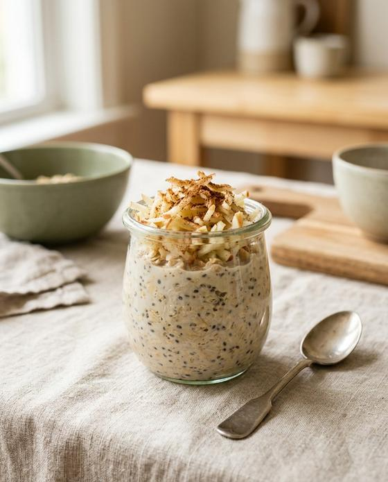
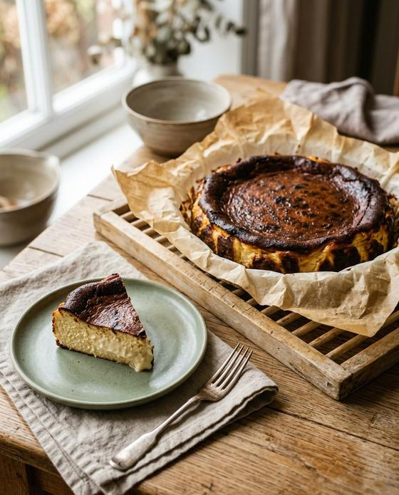
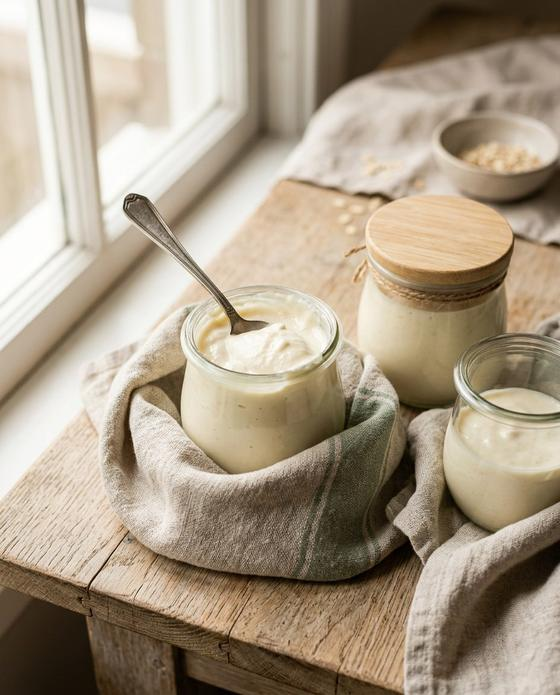
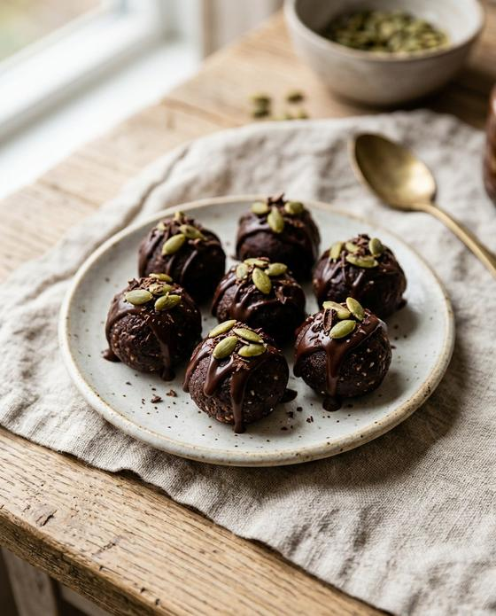
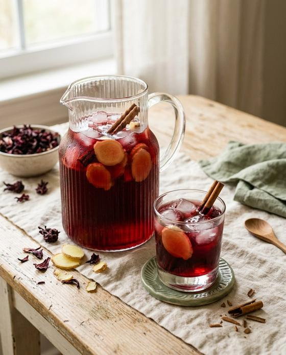
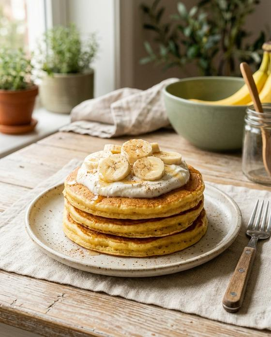

Digestión y vientre inflamado
Para el vientre inflamado, el estreñimiento y la acidez después de comer.
🎁 Especial para quien llegó por el video
🔥 Oferta especial: libro completo por US$ 9.90
Los remedios caseros que usaba tu abuela, ahora con medidas exactas y con lo que la ciencia dice de cada uno. Todo con ingredientes que ya tienes en casa o encuentras en el súper.
Postres sin azúcar refinada, panes sin trigo y bebidas con medidas exactas y con lo que la ciencia dice de cada receta. Todo con ingredientes del súper.
+ BONO GRATIS: libro 150 Soluciones Naturales. Solo va incluido si lo aseguras en los próximos minutos.
Tu bono de 150 soluciones expiró, pero todavía puedes llevarte el libro de 50 recetas con 63% de descuento.
¡Sí! Quiero los 2 libros ahora¡Sí! Quiero mis 50 recetasSé sincero contigo
Si marcaste al menos uno, detente y lee hasta el final. Este kit es para ti.
No es tu culpa
Alguien promete un cheesecake con un huevo y un yogur. Lo haces en casa y te sale un omelette dulce. Alguien jura que un té “lo cura todo”. Lo tomas por semanas y nada cambia. Tiempo perdido, dinero perdido, esperanza perdida.
Este kit es lo contrario: recetas y remedios naturales con medidas exactas, y para cada uno buscamos lo que dicen los estudios de verdad. Lo que funciona está ahí. Lo que es puro mito, te lo avisamos.
Los remedios de la abuela, por fin explicados por la ciencia. La comida cuida. El médico trata. Usa los dos.Quiero el kit con el bono
Libro 1 · 50 Recetas Naturales
No por tipo de platillo. Ve directo al capítulo que te habla a ti.

Recetas y bebidas para suavizar los picos de glucosa
7 recetas
Postres sin azúcar refinada que sí salen bien
10 recetas
Panes, wraps y masas hechos con otros ingredientes
8 recetas
Para el estreñimiento y para tu microbiota
5 recetas
Rituales y colaciones para bajar el ritmo al final del día
6 recetas
Jengibre, cúrcuma y omega-3 en el plato y en el vaso
4 recetas
Menos sodio, más potasio y tés de la tradición
4 recetas
Proteína y calcio para envejecer fuerte
6 recetas🎁 Bono — solo en la próxima hora
El libro de los remedios caseros que usaba tu abuela: tés, compresas, masajes y alimentos para las molestias de todos los días. Cada uno con el paso a paso, el sello de evidencia y la alerta de quién no debe usarlo.
Para el vientre inflamado, el estreñimiento y la acidez después de comer.
Para el dolor de cabeza, de espalda, las articulaciones rígidas y los cólicos.
Para quien se acuesta y no duerme, o se despierta de madrugada.
Para bajar el estrés y el cortisol del día a día.
Para piernas pesadas, tobillos hinchados y manos y pies fríos.
Y 65 remedios más en otros 4 capítulos:
Nada de promesas milagrosas: cada remedio trae el sello de evidencia (fuerte, prometedor o tradicional), la fuente y el recuadro “Atención” con quién no debe usarlo.
Sin el kit
Con el kit
Oferta por tiempo limitado
Pago único. Sin mensualidades. Menos de 5 centavos por receta.
¡Sí! Quiero los 2 libros ahora¡Sí! Quiero mis 50 recetas🔒 Pago 100% seguro con Stripe · Acceso inmediato por correo
Descarga los dos libros, prepara las recetas, prueba los remedios. Si en 7 días sientes que no valió cada centavo, pide el reembolso y te devolvemos el 100% de tu dinero. Sin preguntas. Todo el riesgo es nuestro.
Preguntas
En cuanto se confirma el pago, te llevamos a la página de descarga y también recibes el enlace en tu correo. Son archivos PDF que quedan contigo para siempre.
Sí, para quien compra mientras el reloj está corriendo. Cuando el tiempo se acaba, el bono sale de la oferta.
Sí. Solo tocas el botón, pagas y tocas “Descargar”. El libro se abre en el celular como una foto. Si tienes cualquier problema, responde el correo de la compra y te ayudamos.
Sí. Se abre en el celular, la tablet y la computadora, y lo puedes imprimir en casa.
Sí. Son cosas del súper y del mercado, como kiwi, jengibre, avena, manzanilla y cúrcuma. Y hay una tabla de cambios para cuando te falte algo.
No. Las recetas y los remedios naturales ayudan en el día a día, pero no sustituyen el tratamiento. Nunca dejes ni cambies un medicamento sin hablar con tu médico. Cada receta trae una alerta de quién no debe usarla.
No. Pagas una sola vez y los libros son tuyos.
Tienes 7 días de garantía. Pide el reembolso y te devolvemos el 100%.
Última llamada
Hoy: 200 recetas y remedios naturales por US$ 9.90, con 7 días de garantía. Menos que una comida rápida — y es tuyo para siempre.
50 recetas naturales por US$ 9.90, con 7 días de garantía. Menos que una comida rápida — y es tuyo para siempre.
00h45min00seg ¡Sí! Quiero los 2 libros ahora¡Sí! Quiero mis 50 recetas🎁 ¡Espera!
Asegura ahora los 2 libros por un solo precio. Pago único y acceso inmediato.